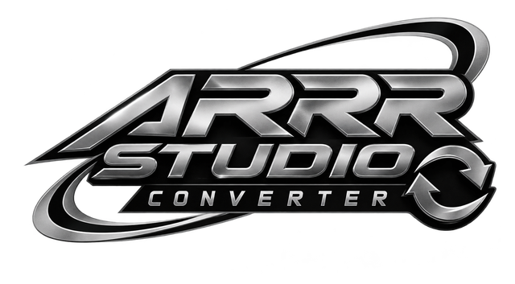

Tidak bisa terhubung
Periksa koneksi internet kamu, lalu coba lagi. Converter butuh internet untuk memproses audio.
Mencoba lagi otomatis saat online.
Periksa koneksi internet kamu, lalu coba lagi. Converter butuh internet untuk memproses audio.
Mencoba lagi otomatis saat online.